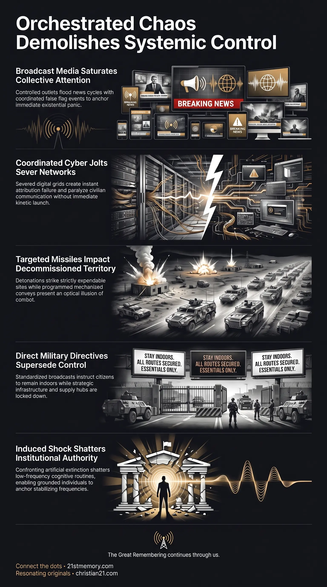

Staged World War III
Staged World War III — A Whitehat and G.A.A. conflict simulation that projects worldwide warfare through media theatre and surgical strikes.

Watch this series on YouTube — every video dubbed into 20 languages. Tap the settings gear on any video, then Audio track, to hear it in yours.
Staged World War III — A Whitehat and G.A.A. conflict simulation that projects worldwide warfare through media theatre and surgical strikes.

The Staged World War III Simulation — Narrative escalation, cyber jolts, and cinematic troop movements that capture collective focus without societal annihilation.
Staged World War III is a meticulously orchestrated global conflict simulation designed to project the illusion of total planetary warfare through media theatre, choreographed surgical strikes, and synchronized narrative escalation. Rather than an authentic kinetic clash between sovereign nations, it operates as an automated A.I. war theatre executed to capture the complete collective focus of humanity. The entire spectacle is coordinated as a Whitehat/G.A.A. production (Global Alliance and U.S. Space Force) that utilizes remaining systemic command scripts on auto-pilot to push public consciousness to the threshold of existential catastrophe without triggering authentic societal annihilation.
The primary function of this event is to generate a controlled, acute panic cycle that shatters the hypnotic complacency of the population. By synthesizing digital sabotage, manipulated troop deployments, and dramatized strikes, the operation creates an overwhelming perception of worldwide chaos. This focused surge of collective tension destabilizes long-standing synthetic programming, forcing human consciousness to confront the fragility of external systems and preparing the realm for systematic structural transition.
Scripted Oppositions and Narrative Inversion: The foundational truth of the conflict is that sovereign geopolitical hostilities are non-existent; all adversarial alignments are actively directed by the same underlying operational script. In Western territories, the media theatre portrays nations like Russia, China, Iran, and North Korea as aggressive villains, while framing the United States, the United Kingdom, Israel, and NATO alliances as defenders. Conversely, across Eastern broadcasting spheres, this exact polarization is reversed, designating Western powers as hostile aggressors. This deliberate screen inversion maintains a balanced polarity of fear across both hemispheres, holding all populations in identical loops of manufactured hostility.
Kinetic Minimization and Structural Preservation: Despite media channels declaring the deployment of hundreds of missile barrages, the physical operations are exceptionally limited and tightly controlled. Missiles are intentionally guided to detonate within expendable sites and barren grounds to ensure the preservation of essential life-support networks. The combat is an optical illusion engineered for the camera lens, where the movement of conventional mechanized forces follows narrative choreography rather than genuine tactical strategy.
The Cyber Catalyst: The operational trigger that ignites the event is non-kinetic. Coordinated cyber jolts strike internal communication grids and infrastructure hubs simultaneously, creating an immediate attribution failure. By feeding falsified intrusion signatures to military command centers, each country is deceived into believing that its borders and digital grids are under active bombardment by foreign rivals, creating instant uncertainty and paralyzing public information channels.
Engineered Extinction Pressure: The driving purpose of the conflict is psychological engineering. The collective mind must be convinced that physical civilization stands on the immediate brink of extinction. This induced shock acts as an energetic crowbar, prying loose the rigid perceptual anchors that bind the collective consciousness to institutional authority.
The initial sequence activates through deliberate propaganda spikes across international broadcasting networks. Controlled media outlets suddenly flood news cycles with alarming stories of naval deployments, intercontinental missile tests, and abrupt border maneuvers between the Western bloc and designated black chess pieces. Tensions surrounding regions like Iran, China, Russia, Ukraine, and Israel are systematically elevated to capture undivided worldwide attention.
During this buildup, pre-arranged false flag events are executed at specific energetic and geographic locations. These incidents include:
Every incident is formatted to produce maximum emotional resonance, drawing public focus away from local routine and anchoring it into an acute global survival posture.
The actual activation of the worldwide crisis occurs when the operation delivers its first physical and infrastructural disruption. Rather than initiating kinetic launches, the network executes massive, coordinated cyber jolts. In the West, digital intrusions and communication outages are immediately attributed to Russian and Chinese cyberwarfare units; simultaneously, Eastern command grids register disruptions attributed to American and Israeli cyber forces.
This creates a self-reinforcing loop of mutual blame. Digital infrastructure, commercial routing, and internet backbones are severed, matching the physical disruption of pre-wired undersea cables and communication nodes. The sudden elimination of civilian telecommunications and internet access cuts off independent verification, generating instant uncertainty and leaving populations dependent exclusively on military emergency transmissions.
Once the communication networks are immobilized, the kinetic phase of the event commences. This stage is defined by precise, contained execution masked as unchecked total warfare:
Choreographed Missile Trajectories: While the news reports give the impression of hundreds of ballistic impacts across the globe, the physical launches are strictly limited. Detonations occur almost entirely on abandoned military grounds, empty fields, and decommissioned installations.
Cinematic Deployment of NPC Armies: Ground troops and mechanized convoys execute coordinated movements specifically tailored for televised news frames. Formations, maneuvers, and vehicular posturing are arranged to evoke maximum dread and realism through video clips, presenting an optical aesthetic of war without genuine operational warfare.
Market Instability and Panic Cascades: The optical shock of military mobilization triggers immediate domestic reactions, including bank transaction halts, stock market drops, and localized panic buying at fuel stations and supply depots. This economic freeze locks the mass mind into an emergency survival loop.
Simultaneously with the onset of kinetic optics, immediate reassurance protocols are activated to prevent chaotic civil self-destruction. Within the first minutes of the sirens and alerts, emergency broadcasts issue standardized directives instructing citizens to remain calm and stay indoors, announcing that direct military control is active to protect populations and that civilian police structures have been superseded.
Under the cover of declared wartime emergencies, conventional governments mobilize, providing the operational screen for Alliance assets to lock down municipal centers, secure strategic supply hubs, and position transition assets across all major territories without inciting civilian armed resistance.
Staged World War III functions as the primary kinetic component of the overarching Scare Sequence, operating in direct synchronization with the Blackout Timeline. It serves as the opening shock—designated as Stage One: The Shaking—which destabilizes societal normality before deeper disclosures occur. The manufactured threat of global nuclear or kinetic annihilation directly interfaces with:
The Communications Blackout: The kinetic theatrics supply the plausible cover story for the sudden collapse of international internet cables, electrical grids, and commercial satellite communications.
The Project Blue Beam Transition: Once the emotional saturation of the war narrative achieves its absolute peak of fear, uncertainty, and exhaustion, the script pivots directly into the staged celestial invasion narrative, utilizing atmospheric holographics and advanced human craft to shift human focus from international war to planetary unity.
Energetic Frequency Fracturing: The acute psychological tension generated by the war theater acts directly on the synthetic reality overlay. The systemic disruption destabilizes low-frequency cognitive routines, forcing sleepers to begin questioning external authority and allowing resonating souls to anchor stabilizing frequencies through the field.
The operational execution of Staged World War III achieves several critical structural and psychological objectives:
Demolition of Geopolitical Legitimacy: By playing out the final cards of nation-state rivalry through an absurd, overt theatrical script, the perceived necessity of legacy political institutions, conflicting national identities, and militarized borders is fundamentally shattered.
Catalysis of Mass Consciousness: The confrontation with apparent extinction forces deep sleepers past intellectual denial. The shock wave breaks through synthetic programming far more effectively than abstract truth disclosures, preparing the general public to receive the hard disclosures delivered during subsequent Emergency Broadcast transmissions.
Stabilization and Awakening Calibration: For awakened and resonating individuals, understanding the simulated nature of Staged World War III prevents them from succumbing to the manufactured fear frequency. By recognizing the mechanical choreography of the missiles, the cyber triggers, and the television maneuvers, they maintain absolute internal calm, serving as grounded energetic anchors that assist the wider population through the collapse of the artificial matrix.
This topic is free to share. Support the archive →